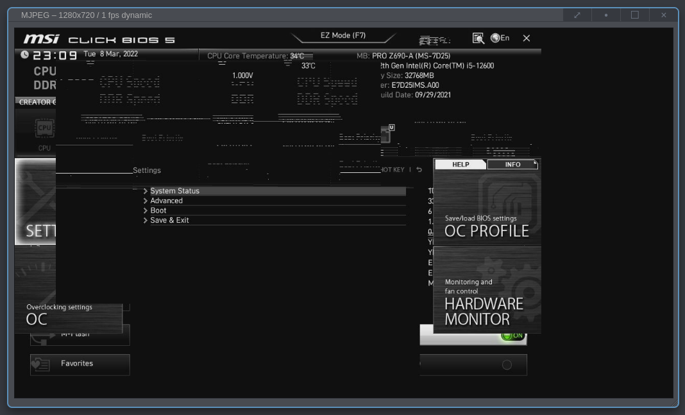

PiKVM with v3 HAT¶
Bla bla bla
Installation¶
From the download-page, grab v3-hdmi-rpi4-latest.img.xz and write it to
sdcard. Assemble the thing and let it boot.
Post-install¶
Login via the web-interface and dump yourself into the Shell/terminal and
switch to root:
# Switch to root
su
Post-installation tasks in the PiKVM shell, as root do the following:
# Change storage to read/write mode
rw
# Change the hostname
hostnamectl set-hostname <the-new-hostname>
# Disable WiFi and Bluetooth
echo "dtoverlay=disable-wifi" >> /boot/config.txt
echo "dtoverlay=disable-bt" >> /boot/config.txt
# Disable janus, it relays information via google STUN servers for webrtc
systemctl disable --now kvmd-janus
# Enable the oled-display of the steel-case
systemctl enable --now kvmd-oled kvmd-oled-reboot kvmd-oled-shutdown
systemctl enable --now kvmd-information
# Change the password
passwd root
# Change password for ui
kvmd-htpasswd set admin
# Change storage to read-only mode
ro
H.264/WebRTC¶
It requires internet access and is by default configured to use a STUN server hosted by google. To avoid this, then disable the janus service and enable the static version:
systemctl disable --now kvmd-janus
systemctl enable --now kvmd-janus-static
See PiKVM-edid for more information about this.
Troubleshooting¶
A couple of notes on issues faced and how to solve them. For more, then
Garbled graphics¶
In case your BIOS/UEFI looks and behaves weird, here is an example of weird:
{kind=link}
then you probably needs the tweak the edid. For details look at
PiKVM-edid. In my case using a MSI PRO Z690-A, then it looked like the
picture above and the following custom-edit fixed it:
# Switch to root
su -
# Change storage-mode to read-write
rw
# Update the edid 1280x1024
echo "00FFFFFFFFFFFF005262888800888888
1C150103800000780AEE91A3544C9926
0F505425400001000100010001000100
010001010101D51B0050500019400820
B80080001000001EEC2C80A070381A40
3020350040442100001E000000FC0050
492D4B564D20566964656F0A000000FD
00323D0F2E0F0000000000000000014D
02030400DE0D20A03058122030203400
F0B400000018E01500A0400016303020
3400000000000018B41400A050D01120
3020350080D810000018AB22A0A05084
1A3030203600B00E1100001800000000
00000000000000000000000000000000
00000000000000000000000000000000
00000000000000000000000000000045" > /etc/kvmd/tc358743-edid.hex
# Update the edid 1920x1024
echo "00FFFFFFFFFFFF005262888800888888
1C150103800000780AEE91A3544C9926
0F505425400001000100010001000100
010001010101D32C80A070381A403020
350040442100001E7E1D00A050001940
3020370080001000001E000000FC0050
492D4B564D20566964656F0A000000FD
00323D0F2E0F000000000000000001C4
02030400DE0D20A03058122030203400
F0B400000018E01500A0400016303020
3400000000000018B41400A050D01120
3020350080D810000018AB22A0A05084
1A3030203600B00E1100001800000000
00000000000000000000000000000000
00000000000000000000000000000000
00000000000000000000000000000045" > /etc/kvmd/tc358743-edid.hex
# Refresh it
v4l2-ctl \
--device=/dev/kvmd-video \
--set-edid=file=/etc/kvmd/tc358743-edid.hex \
--fix-edid-checksums
# Change storage-mode to read-only
ro
A power-cycle of the target-machine might be needed, it was for me. I am
assuming that some video-subsystem probably needed re-negotiating. The above
worked for me, however, you should probably have a look at the manual and how
to “test” an edid, before you overwrite it like above. It is the same steps,
but instead of writing the edid to tc358743-edid.hex then you write it to
temporary file and run v4l2-ctl to see that it works.
Keyboard / mouse are not working¶
If you find that mouse / keyboard is not working then check:
Make sure you have the small USB-C bridge connected. That is the thing that lies with the ATX-pcb. Without it, then mouse/keyboard won’t work.
Make sure you are connected the USB-cabel from the PiKVM to the target-machine.
Make sure that USB works on your target-machine.
That you used the right image, e.g. if you use a v2 image with the v3 hat, then mouse/keyboard won’t work. This might seem obvious, but I made the mistake of just grabbing the first download-link on the download-page, instead of reading the page and grabbing the one for v3… so… if nothing else works, then this might be why.